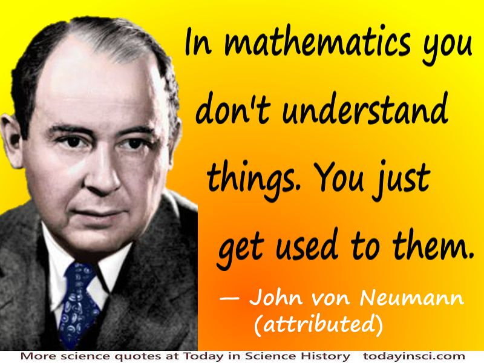

Trivia
- He had a photographic memory and could memorize entire phone books.
- He was a polyglot and could speak several languages fluently.
- He made significant contributions to fields outside of mathematics, including computer science, physics,
economics, and game theory.
- He was a consultant on the Manhattan Project and helped design the explosive lenses used in the atomic
bombs.
- He was a proponent of the nuclear arms race and advocated for the United States to develop the hydrogen
bomb.
- He was known for his eccentricities, such as carrying a silver fork and knife with him everywhere he
went.
